CaptainCapy
CM + 捕鱼 · 海外 · 首测包已完成
数值判断 × 产品取舍 × 交付落地
11 年游戏研发，从数值策划、主策划成长为制作人。擅长用数据拆解核心循环，以 MVP 控制范围，把玩法、商业化与团队交付接到同一条线上。
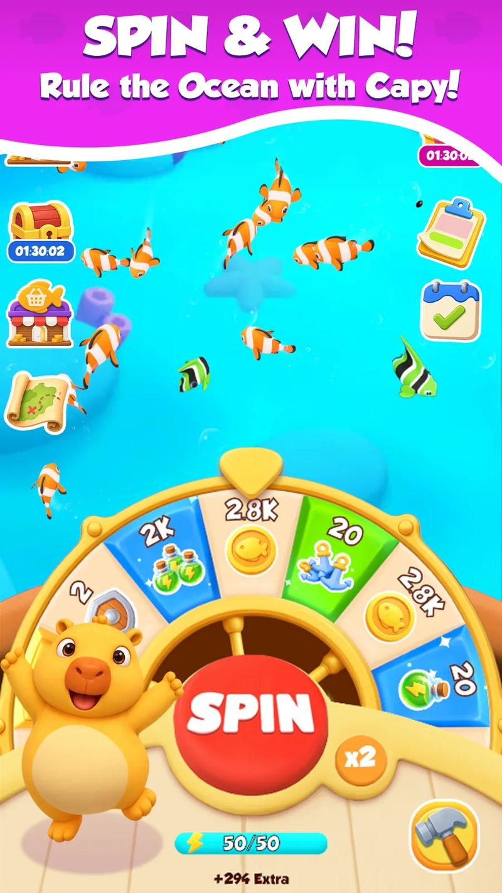
从战斗、经济数值起步，逐步负责系统框架、关卡节奏、版本范围与团队交付。 适合处理“玩法有机会，但商业模型、范围或风险还不清晰”的中间阶段项目。
CM + 捕鱼 · 海外 · 首测包已完成
国内小游戏 · 塔防 · IAA
海外长线 · 数值重构 · 增长模块
“转盘 + 捕鱼”的海外休闲项目。目标是在预算和团队约束内，交付一个完整、可测试的首测版本。
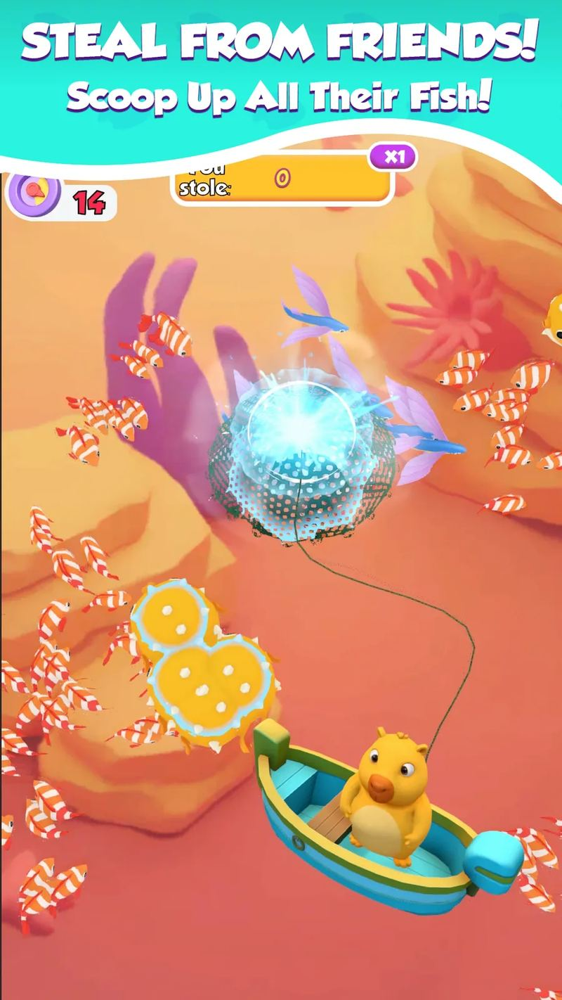
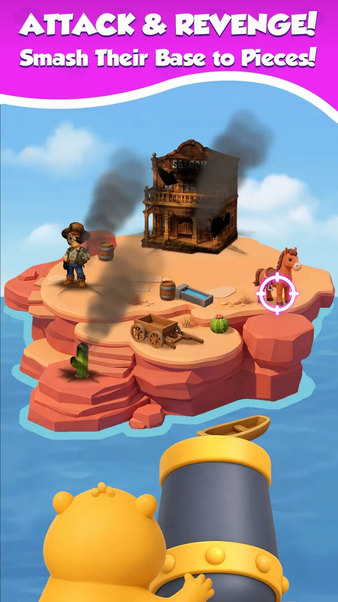
项目范围、里程碑、预算和发行基建；主导核心玩法、系统与数值框架；协调程序、美术、运营之间的优先级与验收。
卡牌系统触达低、理解成本高，删除后释放约 20 人天程序与相应美术资源。
版本范围按玩法验证、资产化、首测三阶段推进，以“可测试”作为阶段门槛。
发行基建完成 Google Play、IAP 与归因链路，让产品具备正式首测条件。
项目已完成到可测试阶段，但尚未找到匹配发行方，因此没有用户测试和商业数据。 下一步应优先验证 CPI、留存与 IAA/IAP 回收，而不是继续扩大内容范围。
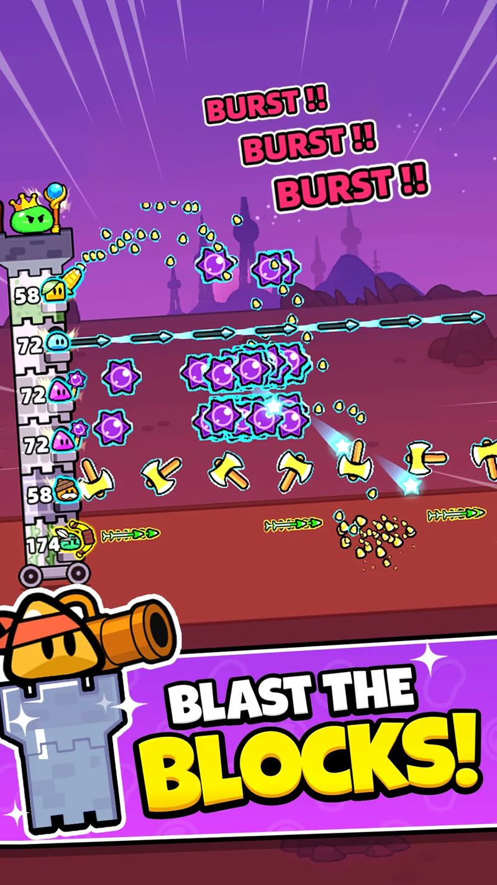
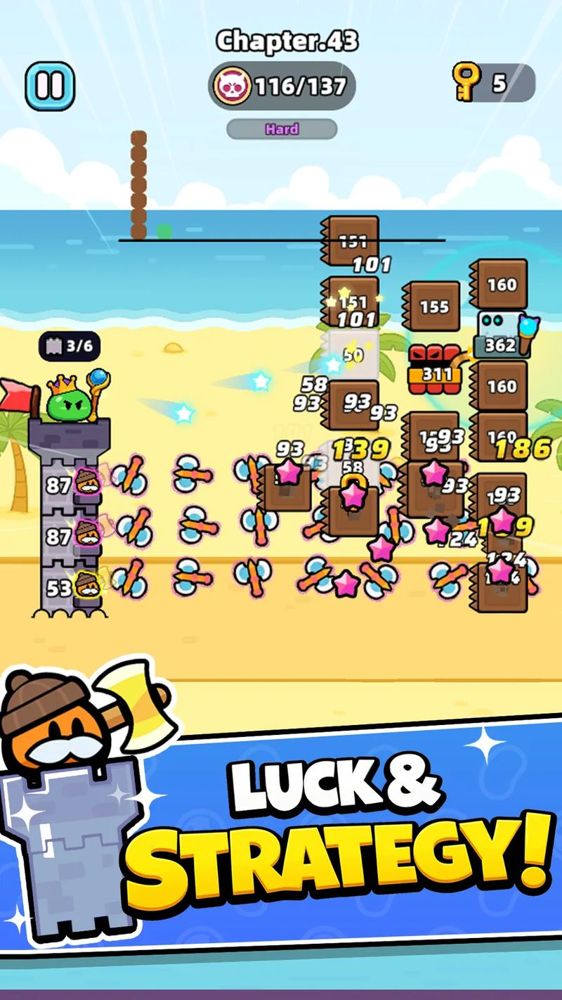
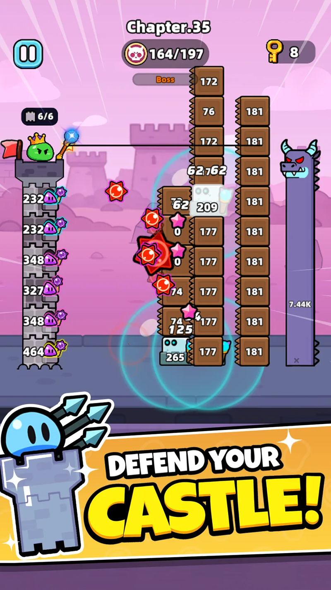
国内小游戏塔防项目。把玩法组合、关卡节奏、养成线和新玩法接入同一套获客与回收逻辑。
单月新增
次留
广告收入 / 用户
30 日用户价值
立项与系统框架参与、关卡节奏、塔防养成线、玩法数值与 IAA 广告节奏。
项目结果来自产品、发行与运营团队的共同工作。“小游戏的核心不是单点玩法，而是首日理解成本、前七天留存与广告回收能否同时成立。”
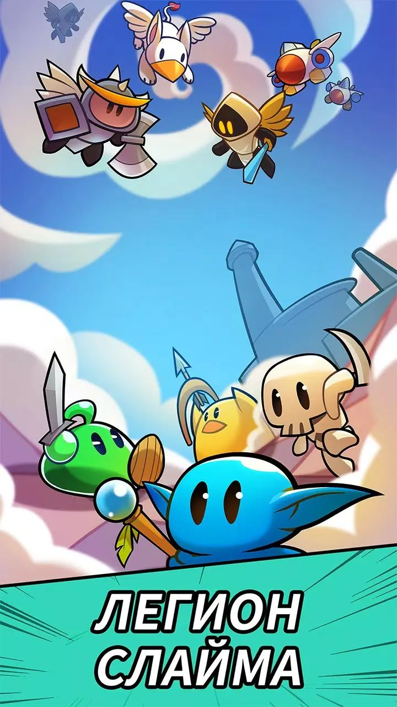
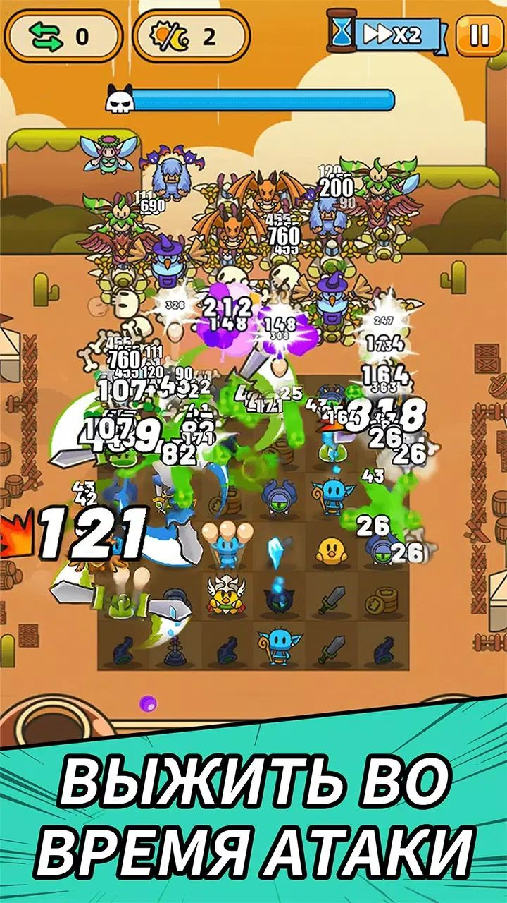
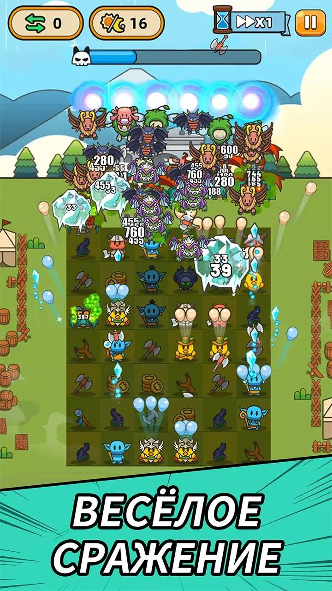
已进入长线运营的海外休闲产品。项目问题不是再加一个系统，而是修复历史数值失衡，让新内容重新具备增长空间。
保留已有结构，处理部分英雄强度与品质价值脱节；重新规划新英雄属性区间与资源价值。
增加新的成长与竞争场景，并配合 PvP；负责部分运营活动、大版本功能与相关系统设计。
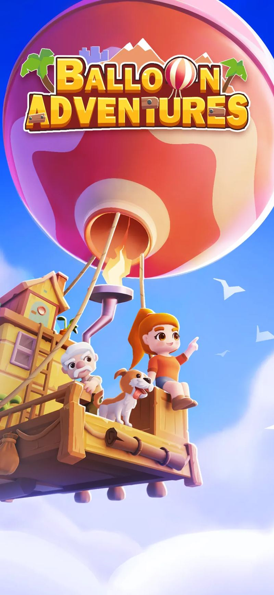
玩法被接受，但前期任务冗长、系统解锁过晚。
$1.43 CPI · 33.2% D1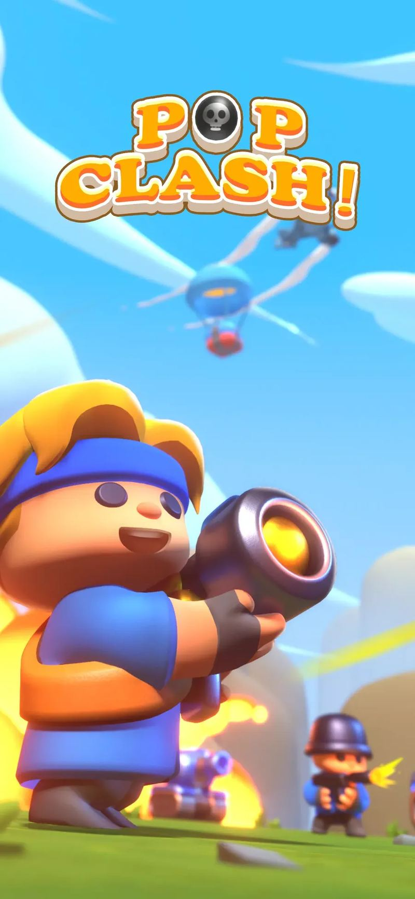
用户能接受失败，问题是内容新鲜度与养成循环。
38.2% D1 · 30.15m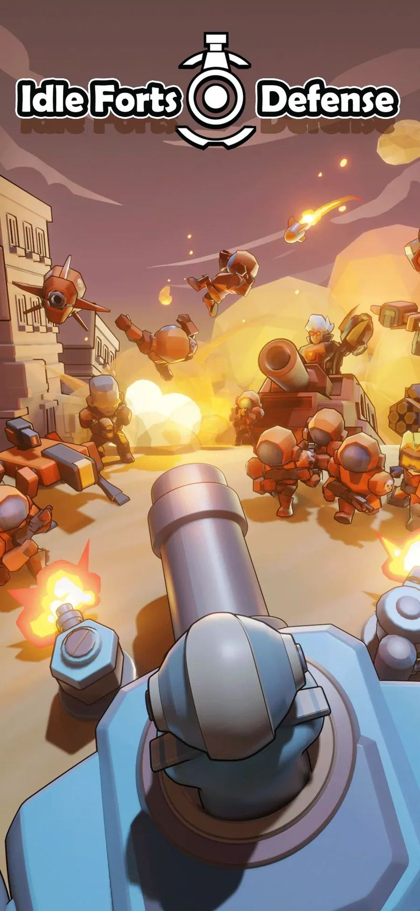
不急着扩研发，先用录屏素材持续买量看长线。
46.4% US 当日 ROI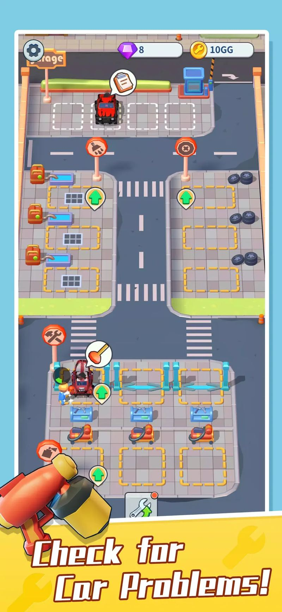
玩法接受度高，低成本录屏素材即可持续验证。
部分市场 CPM 买卖比 ≈5×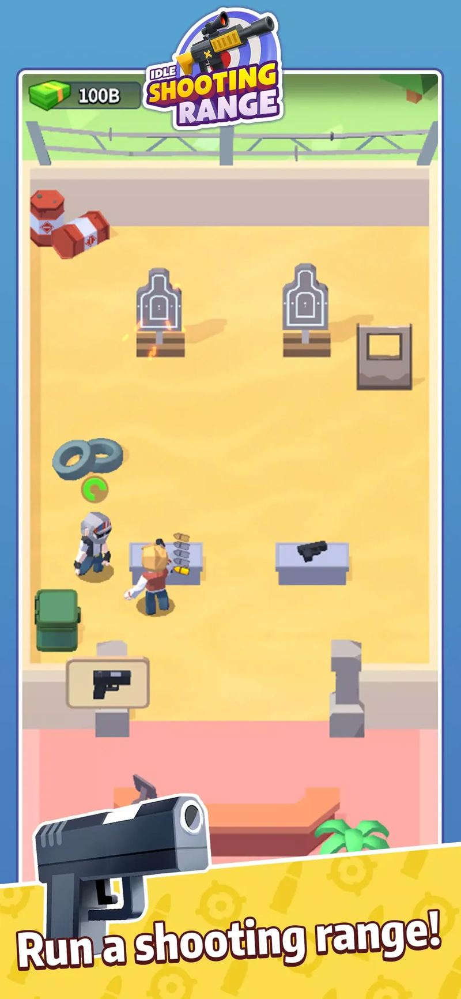
错用第五关难度导致第三关严重流失，CPI 无优势。
35.27% D1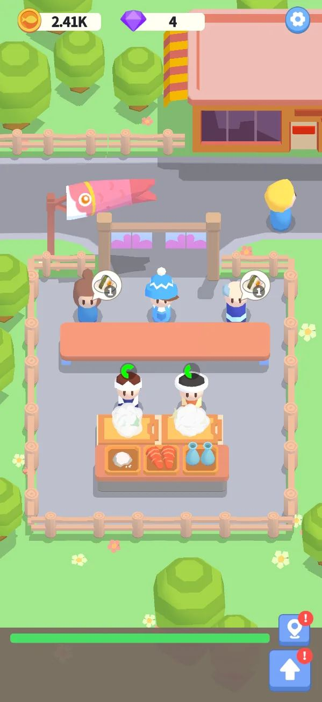
单关卡版本，CPI 无明显优势，只做方向判断。
CTR 3.2%方法不是把问题做成复杂模型，而是让每个阶段都有明确的继续条件、放弃条件与负责人。
拆核心乐趣、资源流动、广告点与付费动力，判断玩法组合是否值得进入原型。
素材测试 → 可玩 Demo → CPA / 留存 → ROI，每一阶段定义继续与停止条件。
难度、资源缺口、养成节奏和广告点位一起设计，而不是上线后再补产品结构。
里程碑、依赖、风险和范围变更都有负责人；AI 用于文档、配置和素材候选。
玩法已经有雏形，但商业模型不清晰；版本已经接近上线，但范围和风险失控； 数据看起来还行，但团队不知道该继续投入还是尽快止损。
SLG、战棋、战斗与经济模型
休闲游戏、玩法原型、长线运营
海外休闲、存量调优、系统重构
国内小游戏、IAA 规模化
0→1 立项、团队、预算及发行交付
LET'S BUILD SOMETHING
休闲游戏制作人 / 主策划 · 成都